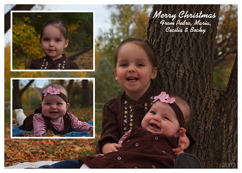

Christmas Card 2007
We recently sent out our Christmas card for this year, and I wanted to talk about the making of it. Most, if not all, of the Christmas cards should have arrived at their destinations. If you didn't get one... don't feel too bad, since I'm about to tell you all about it, and you can print one for yourself if you'd like. That saves me the cost of printing/mailing, and also the need to come up with something to say (if anything) on the back of your card. Consider this the easy way of doing Christmas cards.
Maria was really the brains behind the card this year. I was just the tool to get it done. Did I just call myself a tool? Ugh. Anyway, after dressing the girls in their proper clothing, we headed to the local park to take advantage of the nice fall foliage and the optimal lighting. Lucky for me, the girls cooperated, and we were able to get a number of good pictures of them.

Obviously this isn't anything über fancy or complicated. A single shot of both of the girls, then another of both of them together. I made an effort to white-balance the photos, so they each should have the same color set. I recently acquired the Kaufmann typeface, and found it to be a perfect fit for this card. The whiteness of both the typeface and the borders balances nicely with the fall colors. A smaller, lighter year in the corner doesn't distract from the rest of the picture, yet satisfies my personal desire to time-stamp things like this.
We prefer to say “Merry Christmas” as opposed to Happy Holidays. Even if you don't celebrate Christmas, we still want you to have a merry one. We also think the girls deserved all the space on the card, since they're a bit better looking than we are. Each of the photos are different. Cecilia's is just decent. I like the railroad tracks in the background, and I like that you can't see the cars that aren't too far out of the frame. The photo of Becky is actually one of my favorites we have of her. Obviously we caught her mid-smile, and I love her little foot sticking up. It's a great photo. The combined photo is just alright. It's precarious positioning, so we got the best photo we could. It's still a fun shot of them.
Overall we were thrilled with some of the pictures we got. Maria was happy that we sent out a Christmas card this year. Last year it wasn't a priority, but this year it was. We opt to make our own, since I'm cheap. I don't want to pay some photographer extortionist fees, and I don't want to pay for some odd-ball shaped printing that costs too much to both print and mail. My other issue with those is that I always think the photos of the people are too small. For the once a year I might get to see some people I want that photo to be larger than a post-it note. On the positive side of it, I enjoy the chance to design something, however simple it may be. I also enjoy the satisfaction that comes with assembling something, despite most of the process being on the computer.
I'll add my simple wishes to each of you who may read this that you have a very merry Christmas. I'm counting down the days until I'm done with work for the year and can go on vacation with people I love in a place I love. Merry Christmas, and Happy New Year. (don't worry, I'm not done posting for the month. I'm actually about to write another entry right after this one)
- Prior: Einstein
- Next: A Little Face-Lift